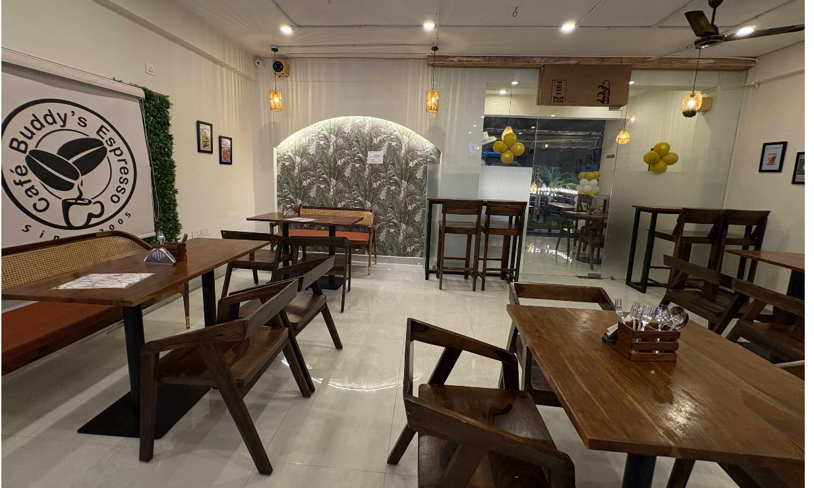
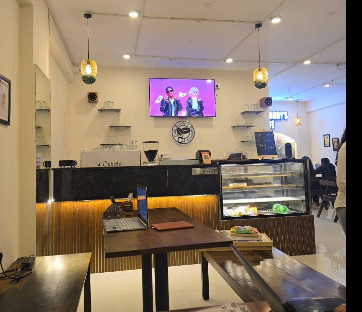
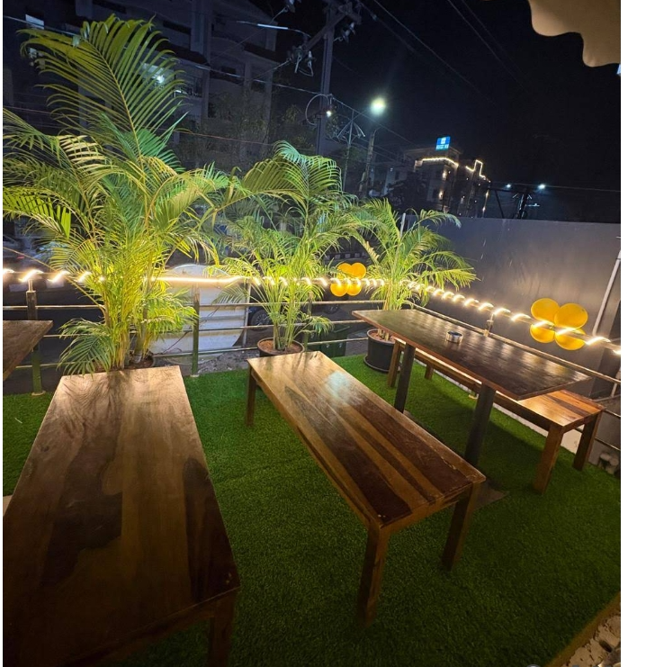

Huge variety means better CTR and stronger intent matching.
People searching for coffee, pasta, desserts, cold brew, burgers, rice bowls, mojitos, and hot chocolate can all find relevant cues on one page.
Coffee, Comfort, Conversation
Cafe Buddy's Espresso blends warm interiors, rich coffee, indulgent desserts, and a menu full of crowd-pleasers into one premium yet welcoming neighborhood cafe in Vizag.
Cafe Experience
The palette here is drawn from your screenshots: matte charcoal from the menu UI, creamy ivory from the walls, deep walnut from the tables, olive from the terrace greens, and warm amber from the hanging lights.
That makes the brand feel more real and memorable while still staying conversion-focused for local SEO, map clicks, calls, and menu discovery.


The menu screenshots and reviews together position the cafe as one of the stronger beverage stops in this part of Vizag.
This is important for both user perception and local rankings because broad menu intent often brings more discovery traffic.
The visuals support high social share potential and help the brand feel modern without losing its cozy identity.
Guest Reviews
"Loved it and coming to food superb. My favourite food I ordered here is Chicken Alexandria."
"Hot chocolate is perfect in consistency and yummy chocolatey. We also tried sandwiches, starters and herb rice."
"My personal favourite chef special Korean bun... must try item."
"Best resto cafe in Vizag with affordable prices and food taste is so nice, cheese cake is top notch."
"Loved the coffee and the vibe. They happily gave us a new one at no cost after an accidental spill."
"Amazing selection of coffees... blueberry cheesecake was bang on and the Lotus Biscoff Matcha Latte was too good."
Local SEO Copy
Cafe Buddy's Espresso is a top pick for people searching for a cafe in Visakhapatnam with specialty coffee, desserts, pasta, sandwiches, rice bowls, matcha, cold brews, and a calm ambience. If you want a coffee shop near Balayya Sastri Layout or a stylish cafe near North Extension, this location checks both food and vibe.
Visit Us
Open Monday to Sunday: 10:00 AM to 11:00 PM
The terrace setting from your screenshots adds another strong brand cue: greenery, warm lights, and a relaxed evening atmosphere.

Find Us Fast
Use the mini map below for a quick location view, or tap directions to open Google Maps instantly.